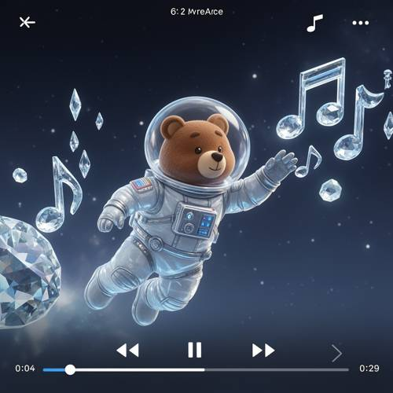
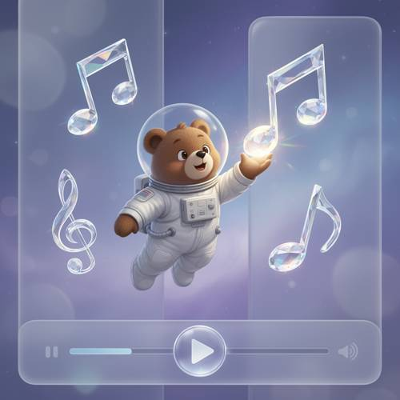
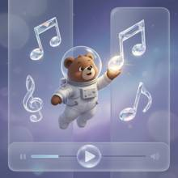

Compound — Please design a playback scene for a music App. A cartoon bear wearing
Please design a playback scene for a music App. A cartoon bear wearing a spacesuit floats to touch the musical symbols made of crystals. The overall style is a glass imitation.

Direct — one call, no iteration

Continuum — Kimi K3 + FLUX.2-dev
Judge — Direct
PASSCompound - Imagination — The image shows a fantastical scene featuring a cartoon bear wearing a white spacesuit and a clear helmet. The bear is floating in space amidst stars, reaching for musical notes that are depicted as being made of crystal.
PASSAttribute - Material — The image contains multiple musical notes rendered to look like they are made of crystal. They are translucent, multi-faceted, and have highlights that suggest a crystalline or glass-like material.
FAILStyle — The overall style of the image is not consistently 'glass imitation'. While the musical symbols and some floating shapes are rendered in a crystal or glass style, the main subject, the bear, has a soft, furry texture, and its spacesuit appears to be made of an opaque, solid material. Thus, the 'overall style' is not glass imitation, but a mix of textures.
PASSAction - Full-body (Character/Anthropomorphic) — The image depicts the full body of a cartoon bear in a dynamic floating pose. The bear's left arm is extended forward with its hand open, reaching towards the nearby musical symbols, clearly illustrating the action of floating to touch them.
Judge — Continuum
PASSCompound - Imagination — The image features a cartoon bear character wearing a white spacesuit with a transparent helmet. The bear is positioned in a floating pose and is reaching out to touch a musical note with its paw. There are multiple musical symbols, including notes and a treble clef, that are rendered with a crystal-like, faceted appearance.
PASSAttribute - Material — The musical symbols, which include a treble clef, an eighth note, and a sixteenth note, are depicted as being made of crystal. They are translucent, have faceted surfaces that reflect and refract light, and display prismatic colors, consistent with the material description.
PASSStyle — The image employs a 'glass imitation' or glassmorphism style. This is most evident in the user interface elements, such as the translucent playback bar at the bottom and the semi-transparent vertical panels in the background, which have a frosted glass effect.
PASSAction - Full-body (Character/Anthropomorphic) — The cartoon bear is depicted in a full-body view, suspended in a floating posture as if in zero gravity. Its left arm is outstretched, with its paw making direct contact with a glowing musical note, accurately representing the action of floating to touch an object.
What the agent did
Thinking
Design a music app playback scene: cartoon bear in spacesuit floating, reaching toward crystal musical notes, glassmorphism style. Generate with flux2-dev.
Model
I'll generate this music app playback scene with flux2-dev.
Step 1 — `generate_image`
{
"model": "flux2-dev",
"prompt": "Music app playback screen scene in a glassmorphism style. A cute cartoon bear wearing a white astronaut spacesuit with a clear glass bubble helmet floats weightlessly in the center, reaching out one paw to touch a glowing crystal musical note. Several translucent crystal musical symbols \u2014 eighth notes, quarter notes, a treble clef \u2014 float around it, made of faceted clear glass that refracts rainbow light. Background: soft dreamy purple-blue gradient nebula space with frosted glass panels, subtle bokeh light orbs. Bottom of the frame: a frosted glass music player bar with a round glass play button and a thin translucent progress bar. Soft glow, glass imitation aesthetic, delicate reflections and refractions, clean digital illustration, high detail."
}
Result img_0

Thinking
The image looks quite good. Cartoon bear in spacesuit floating, touching a glowing crystal note, crystal musical symbols, glassmorphism, frosted glass player bar at bottom with play button and progress bar. This matches the prompt well. Let me check details — the bear's paw touching a crystal note with glow — yes. Mark best. Could inspect fine details but overall it satisfies. Maybe minor: the play button icon looks fine. I'll mark best and stop.
Step 2 — `mark_best`
{
"image": "img_0",
"reason": "All requested elements present and well-rendered: cartoon bear in spacesuit floating, paw touching a glowing crystal musical note, multiple crystal music symbols, glassmorphism style with frosted glass playback bar."
}
Thinking
Done. Summarize.
Model
The scene is complete and I've marked it as the final result. Here's what the design includes: **Scene composition:** - 🐻 **Cartoon astronaut bear** — a cute brown bear in a white spacesuit with a clear glass bubble helmet, floating weightlessly at center, reaching out one paw to touch a glowing crystal eighth note with a sparkle effect at the contact point - 🎵 **Crystal musical symbols** — faceted, translucent eighth notes, a treble clef, and other notes floating around the bear, refracting subtle rainbow light like real cut glass - 🔮 **Glass imitation (glassmorphism) style** — frosted translucent panels layered over a soft purple-blue nebula background, with bokeh light orbs adding depth - ▶️ **Playback UI** — a frosted glass player bar at the bottom with a round glass play button, translucent progress bar, pause and volume icons, completing the music app feel The overall aesthetic is dreamy and cohesive — the glassy notes, helmet, and UI panels all share the same refractive material language, tying the illustration and interface together.